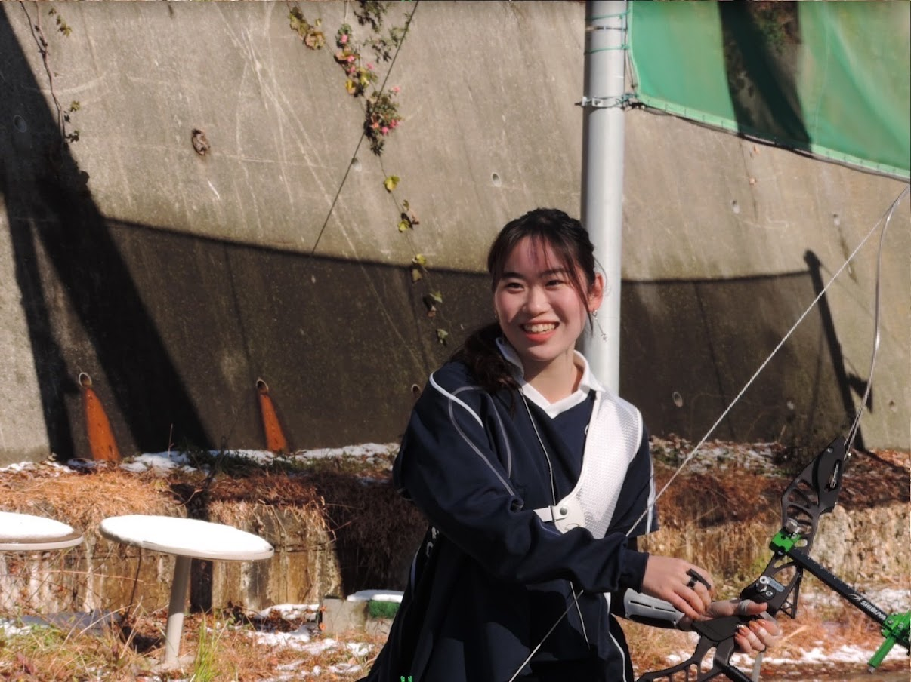

国際社会科学科の良い所はパソコンを毎日使っていくうちにパソコンの扱いに慣れることが出来ること、国際色が強く周りの人々から刺激を貰って成長することが出来ることです。オンデマンドの授業においては溜めずに毎週こなしていくことで、テスト直前に焦ることが無くなります。（私は溜めまくっていますが…笑）
幼い頃、出先で体験したアーチェリーが楽しかったからです。
アーチェリーは身体面だけでなく、精神面も大切なスポーツです。個人的には精神を安定させる事が1番大事だと思います。1年生の間は忙しいですが、自分の時間も大切にして下さいね！
先輩方がとんでもなく優しく、楽しく活動できる所、一見個人競技に見えて団体競技なので皆との絆や中が深まりやすい所だと思います。
緑と黒を基調にしています。あとから考えると鬼滅の刃の炭治郎カラーになってしまったなと思います笑
Surface Proを使っていましたがある日突然電源が入らなくなり、授業のデータが全部飛んでしまいました…。当時はテストやプレゼンテーションが立て込んでいて、絶望した記憶があります。修理に出してデータを取り出そうにも、それが出来ない製品だと言われてしまい、急を要したので買い換えた所、十数万円が飛びました泣 今はAppleのMac book airを使っています。修理に出しやすい・丈夫な製品を買うか、毎回バックアップをとることをおすすめします！
分からないことがあればすぐに先輩方を頼って下さいね！
